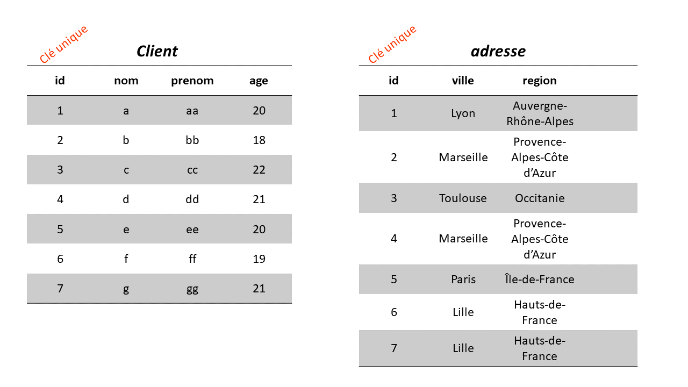
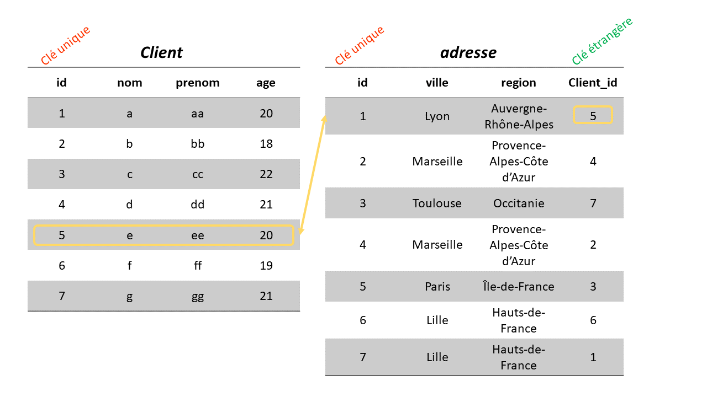

install.packages("dplyr")
library(dplyr)Les jointures
Arthur Bréant
Les jointures
Les jointures SQL
En SQL, les jointures permettent de relier les différentes tables de notre base de données. Pour rappel, une table enregistre des données d’un domaine bien précis.
Réaliser des jointures entre nos tables permet donc d’exploiter la puissance d’une base de données relationnelle. Cela permet de réunir les différentes informations contenues dans notre base.
Il est possible de réaliser une, ou plusieurs jointures dans la même requête SQL.
Pour réaliser une jointure, il faut repérer la clé commune aux deux tables. La jointure doit se faire entre une clé primaire (primary key) et une clé étrangère (foreign key).
Rappel


Avant de commencer…
Avant d’attaquer les jointures, récupèrons des données pour nous entrainer :
Création des tables
Mettons ces tables dans notre base de données :
Let’s go !
INNER JOIN
INNER JOIN
La jointure interne INNER JOIN est la plus courante en SQL. Elle permet de faire une jointure quand une valeur de la colonne clé est présente dans les deux tables.
INNER JOIN
Vite, vite un exemple…
INNER JOIN
LEFT JOIN
LEFT JOIN
La jointure externe LEFT JOIN permet de retourner tous les enregistrements de la table de gauche même s’ils ne sont pas présents dans l’autre table, à droite..
LEFT JOIN
LEFT JOIN
RIGHT JOIN
RIGHT JOIN
La jointure externe RIGHT JOIN permet de retourner tous les enregistrements de la table de droite même s’ils ne sont pas présents dans l’autre table, à gauche..
RIGHT JOIN
⚠ RIGHT JOIN ne fonctionne pas dans tous les SGBD !
FULL JOIN
FULL JOIN
La jointure externe FULL JOIN permet de retourner tous les enregistrements des deux tables.
FULL JOIN
⚠ Idem pour FULL JOIN, ne fonctionne dans SQLite.
Exercice récapitulatif
Nous allons créer des nouvelles tables :
2 questions :
- Qui sont les étudiants avec le nom ayant reçu une mention bien et très bien ?
- Quelle est la répartition des mentions selon le genre des étudiants ?
Exercice récapitulatif
Les étudiants avec le nom ayant reçu une mention bien et très bien
Répartition des mentions selon le genre des étudiants

Les jointures